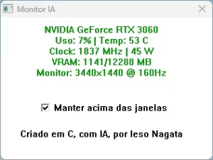

ieso nagata
Do Cansaço ao Código: Como um Domingo de Folga Virou um Projeto de Software
Às vezes, as melhores ideias nascem nos momentos mais inesperados. Foi exatamente o que aconteceu comigo num domingo de folga...